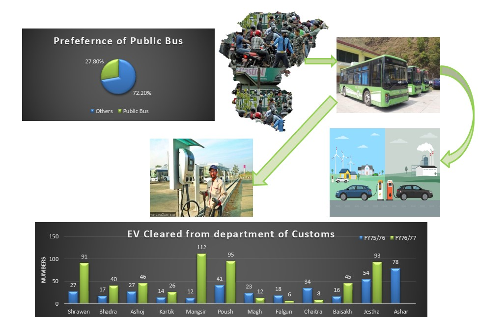
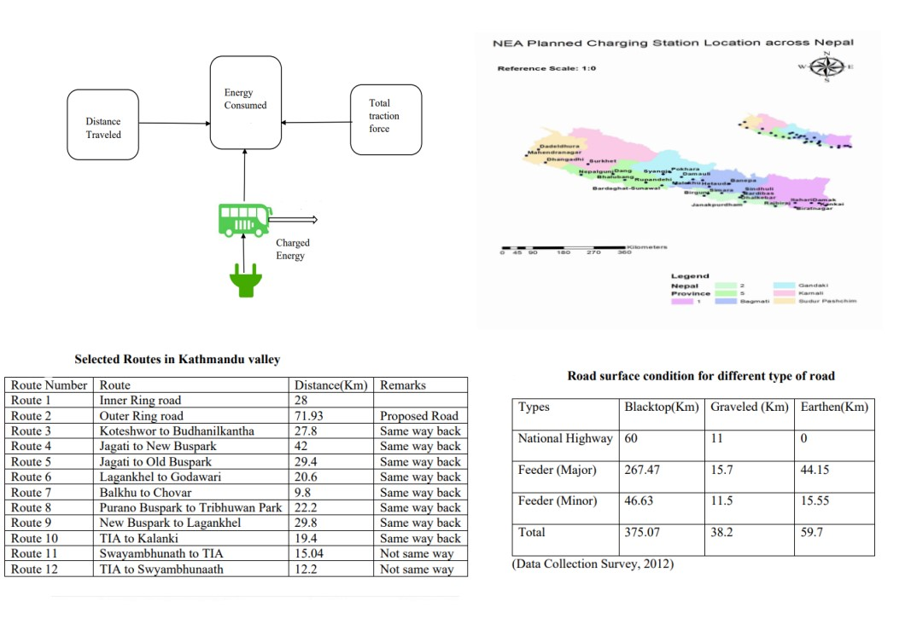
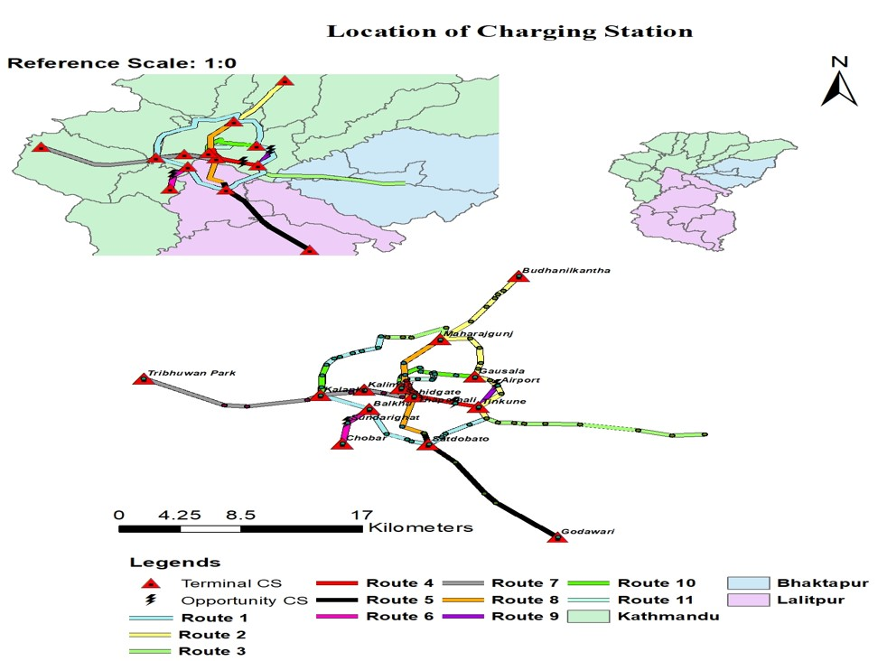
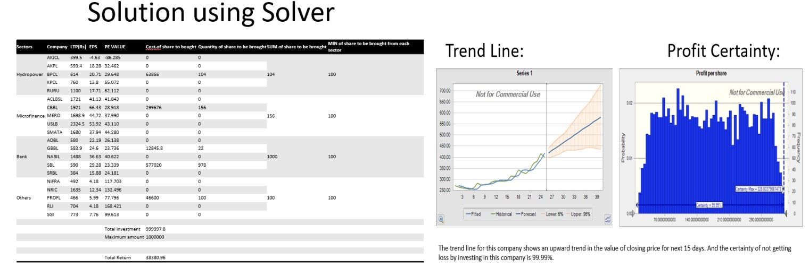
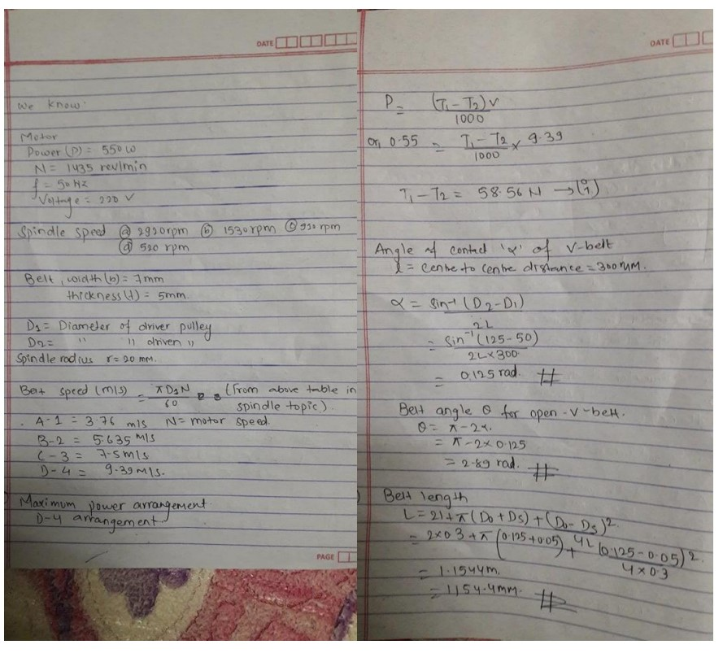
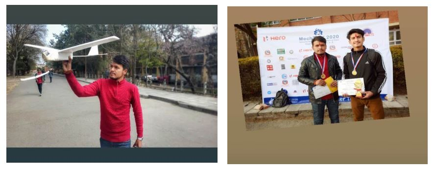

Projects and Research
1) A model for locating optimized location for EV charging station for public transport network inside Kathmandu valley.
Development of our model is related to the policy that Nepal government is planning to implement to control the energy crisis. The utilization of this model can be done in Kathmandu valley when we shift our major source of public transportation from traditional fossil fuel vehicles to Electric vehicles. The optimized location model fulfils the demand of all the electric bus at minimum cost. Various alternatives that can be selected for charging facilities are:

The optimized location for charging stations obtained from our result can be used to create a managed system for EV charging station in various routes of the Kathmandu valley. Based on the calculation and modeling of our project we can reduce the long queue for charging further increasing the QoS.

Our project is only based on the placement of the charging stations in the valley but after the successful completion of it, we can expand our research for the highway routes also for the proper management of the vehicles in the long routes. Hence, the trend of EV in Nepal can bring a massive change in the energy sector of our country.

2. Study of the Nepal Stock Exchange Limited
The minor-research project was conducted online in order to optimize the investment for a private investor in the Nepal Stock Exchange (NEPSE) for short-term trading and to evaluate the returns after 15 days. The study evaluated 20 different companies, with five companies each coming from the hydropower, banking, and microfinance sectors, and the remaining five coming from various sectors. The data for the study was obtained from the official NEPSE website. The goal of the optimization was to select at least four companies for investment, with one coming from each of the banking, microfinance, and hydropower sectors, and the final one coming from other categories. This optimization was done using MS-Excel's solver with a limited sum of money (Rs. 10 lakh). Data from 25 trading days (from 2021-07-01 to 2021-08-05) was also used to forecast the closing price for the next 15 days, using the Crystal Ball Predictor. Crystal Ball simulations were also conducted to assess the risk and certainty of not losing money by investing in different companies.

3. Optimization for EV Charging Station for Kathmandu
This research is being done under supervision of Dr Khem Gyanwali, Campus Chief of Thapathali Campus. This research is being done under the umberella of energy laboratory of Thapathali Campus. The research studies the electric bus choices and the optimization of the placements of charging stations inside Kathmandu valley. My responsibility in this research is more in programming and optimization using python. We are working on developing and solving the optimization problem in python. I am working on data analysis and visualization and in linear porgramming.
4. Power Transmission of Bench Drilling Machine
It is one of the minor project that I had completed for the Machine Design coursework for my engineering where the overall power transmission system of bench drill of our campus workshop is observed Power, toque and other given specification is examined and used to calculate the material used in V-Belt and verified with calculated maximum tension and stress on V-Belt.

5. Glider Plane
Glider Plane Competition organized by IOE Pulchowk Campus on Mechtrix-2020,7-9 February 2020. Our team(2 members) of Robotics and Automation Center(IOE Thapathali Campus) worked on this project for a month and made it and took part and won the competition. It glided the record-breaking 48+ meters in air without any thrust which was the best performance among all participants and secured the First position in that competition.
